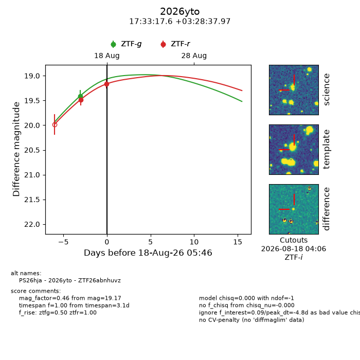
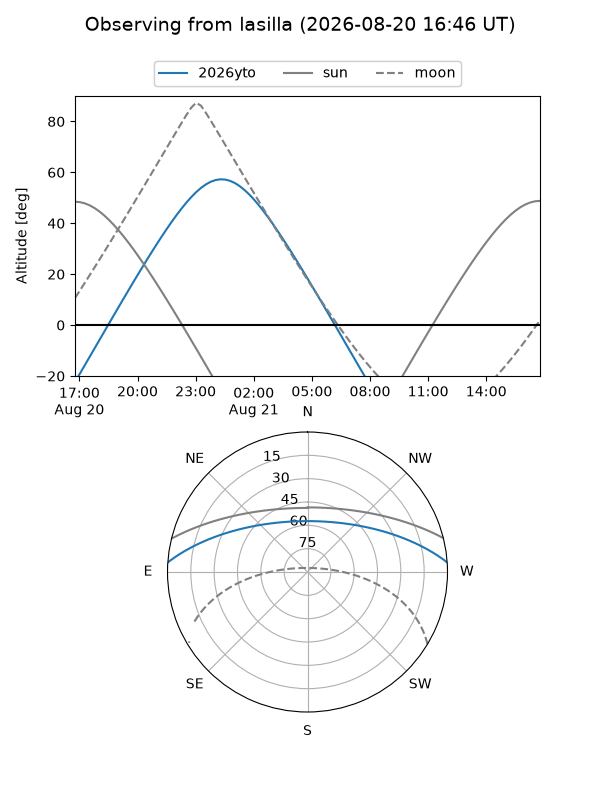
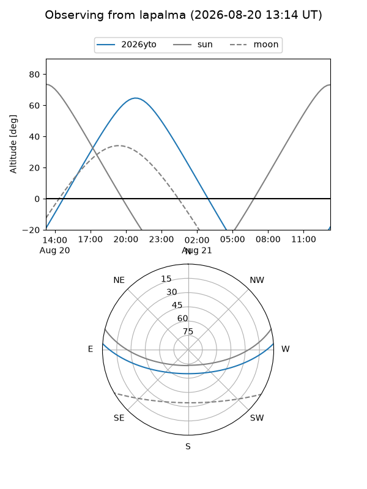
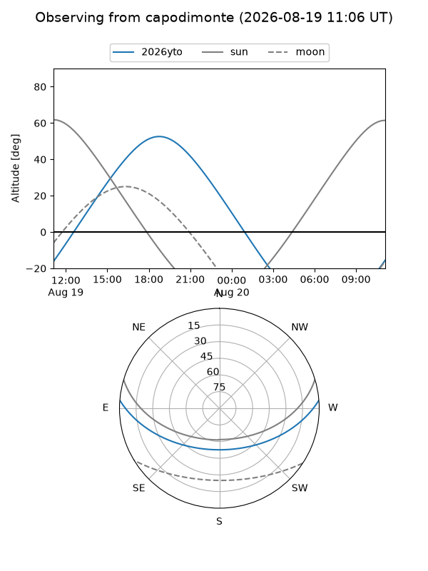
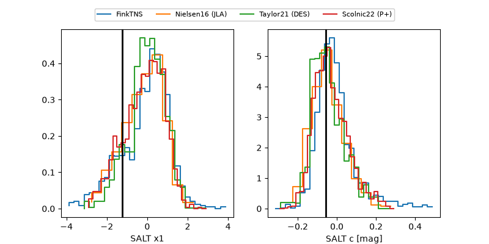

2026yto
Target 2026yto at 2026-08-18 05:49
Aliases and brokers:
FINK-ZTF: ztf.fink-portal.org/ZTF26abnhuvz
Lasair-ZTF: lasair-ztf.lsst.ac.uk/objects/ZTF26abnhuvz
ALeRCE-ZTF: alerce.online/object/ZTF26abnhuvz
YSE-PZ: ziggy.ucolick.org/yse/transient_detail/2026yto
TNS name: wis-tns.org/object/2026yto
Direct TNS query: direct search
alt names
ZTF26abnhuvz (ztf,fink_ztf)
2026yto (tns,yse)
PS26hja (panstarrs)
Coordinates:
equatorial (ra, dec) = 263.3234,+3.47722
equatorial (HMS+DMS) = 17:33:17.61,+03:28:37.97
galactic (l, b) = (26.9711,+18.94869)
Flags:
TNS type: nan
peak dt: -4.8
Photometry:
last ztfg=19.41, ztfr=19.17
1 ztfg, 2 ztfr detections
Lightcurve

Visibility



Additional plots
